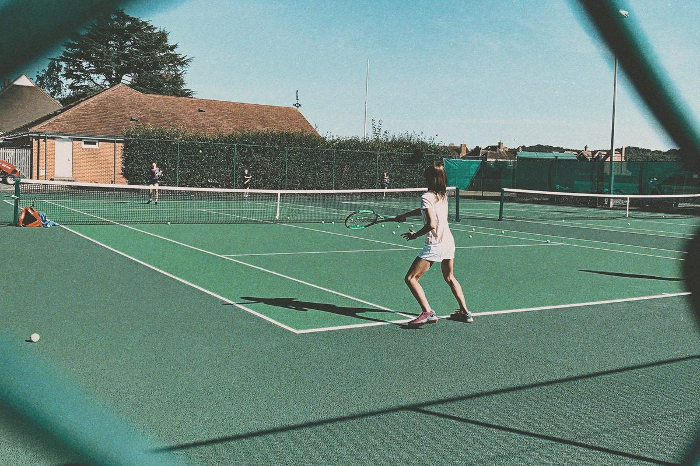

A clubhouse wallAn ivory wall by day, a dark wall after dark. Warm ink, never navy.
Framed printsEvery photograph hangs like a print in a clubhouse: a dark frame, a white mat and a caption plate.
Centred CaslonOne classic serif, centred, speaks for the club. Bold capitals are kept for the Pro National mark.
Four courtsThe signature: the club's four courts drawn in lawn green with white lines, one for each program, each with a ball served by the rules.
Red is Register nowThe club's red is in the logo and on Register now. Nothing else is red.
Live means nowThe yellow of the ball marks only what a real date makes current.
Colour
An ivory wall, warm ink, lawn green and the club's red.
Ivory and warm near-black ink for reading, a dark panel where a page needs weight, lawn green for the four drawn courts, and the club's own red, kept for Register now and the logo, so red always means the same thing. No gold, no brass and no navy. Green is the courts and nothing else. Every colour has one name and one job. The contrast figures below are measured in your browser from the colours as they are drawn, so they stay true if a colour changes.
Paper
--paper#F4F1E8 The wall: the ground of the whole site. Ivory, never pure white.
Ink
--ink#171B18 Text, ink buttons, the frame of a print. A warm near-black.
Ink 2
--ink-2#454C46 Body copy and ledes.
Ink 3
--ink-3#596059 Captions and labels.
Chalk
--chalk#E9E5D8 The Recreational half, the closing band, day frames.
Rule
--rule ink at 16% Hairlines where rows exist.
Dark panel
--blazer#1F2421 The dark panel: the High Performance half on Home.
Night
--night#141714 The wall at night: the High Performance page, the Pro National Academy.
Club red
--red#DF3124 Register now and the letters of the logo. Nothing else.
Red, pressed
--red-press#B4271C The fill that rises on press.
On dark 2
--on-dark-2#C9CCC4 Secondary text on the dark panel and night.
Lawn
--lawn#2F6D49 The surround of the four drawn courts.
Lawn, court
--lawn-court#3A7D55 The playing surface inside the white lines.
Mat
--mat#FDFCF8 The white mat around every photograph.
Live
--live#CFEE3A Only on states a real date makes current.
Measured contrast
Pair
Ratio
WCAG
Where it is used
Ink
17.79
AAA
Headings and text on paper
Ink 2
8.27
AAA
Body copy, ledes
Ink 3
5.78
AA
Captions, labels, meta
Register
4.56
AA
Register now label, 13px bold capitals
Lines
5.0
Graphic 3:1
White court lines on the lawn of the four courts. Never text.
Plate
6.7
AA
The caption plate under a print, on the mat
Pressed
6.47
AA
Register now on hover and press
Dark panel
13.96
AAA
Text on inverse bands
Dark panel 2
8.52
AAA
Secondary text on inverse bands
Night
18.80
AAA
Performance theme text
Live
13.50
Graphic 3:1
Live dot on the running-now chip: an ink chip by day, a hairline chip on the night ground after dark (meaning carried by its text)
On day paper
1.32
Fail
Why the live dot never sits on the day ground: it always has ink or the night ground behind it.
Colour at night
The same wall, after dark.
On a phone or computer set to dark, the ivory wall becomes a dark one, so an evening visitor reads in comfort and the club still looks like itself. The site follows the visitor's own setting. The dark is a warm near-black, never navy. The mats of the prints stay pale, a little dimmed, so the photographs still hang on the wall. The lawn of the courts is one step deeper. Red is never dimmed. Photographs drop to 86% brightness so they sit in the dark instead of glowing.
Your choice is remembered on this device for these three pages. The contrast figures above are measured again each time you switch.
Day
--paper #F4F1E8
--ink #171B18
--chalk #E9E5D8
--blazer #1F2421
--red #DF3124
Night
--paper #121512
--ink #EFEDE6
--chalk #1B1F1B
--blazer #242A25
--red #DF3124, unchanged
Text at night is measured in the table above each time you switch: ink, ink 2 and ink 3 all pass on the dark wall.
Labels on red stay fixed white in both schemes, 4.56:1. A dark label on red would fail.
A white button on a photograph stays white at night: it belongs to the picture, not to the page.
One theme per page. No section flips to the other scheme. The High Performance half on Home is the one deliberate colour block.
Type
Caslon, centred, for the club.
Caslon, a classic book serif, speaks for the club in every headline and date; Hanken Grotesk, a plain modern sans, carries prices, times and buttons, so the site reads as a club with a history and is still quick to use. Libre Caslon Display for headlines and figures. Headlines and section headings are centred, the way a club sets a notice or a menu. Libre Caslon Text for ledes, captions and plates; its italic is the voice of High Performance on Home (Train. Compete. Develop.). Hanken Grotesk for body copy and controls, with its heaviest capitals kept for one job, the Pro National mark. The serif is never bold. All three are open-licence fonts (SIL Open Font License 1.1) served from the club's own site, with nothing loaded from another company.
Aa 19
Libre Caslon Display 400Headlines from 32px up, dates as display. 24 KB.
Aa 51
Libre Caslon Text 400 and italicLedes, captions, confirm slots, placeholder descriptions. 53 KB.
AA 75
Hanken Grotesk, weight 100 to 900Body, nav, times. Capitals at 800 for the Pro National mark only. Tabular lining figures by default. 35 KB.
The scale, seven steps
1 Display capitalsHanken 800, -0.045em, 44 to 124px, for the Pro National mark only; every headline is Caslon
Pro National
2 Display serifCaslon Display, centred, 24 to 68px, one per page
Tennis for every level.
2b The two halvesThe program's name is the heading, Caslon Display, 32 to 56px; its tagline is smaller, Caslon Text, 20 to 28px, italic for High Performance
High PerformanceTrain. Compete. Develop.
3 Section headingCaslon Display, 32 to 52px
What are you looking for?
4 Card headingCaslon Display, 28 to 40px
Junior Recreational
5 LedeCaslon Text, 19 to 22px, +0.01em
Year-round tennis, coaching, competition and community in Thornhill.
6 BodyHanken 400, 17px / 1.6, 40rem measure
Group Lessons are run in multiple week sessions and classes are available for members and non-members.
7 Label and captionHanken 650 capitals +0.16em, or 400, 14px
Fall & Winter Indoor 2026/27 Club photograph, August 2022.
Figures, set like a timetable
$368.507:30amAges 4-66:30am-11:30pm
The 1951 test
1951 Il1
Rendered in Caslon Display: the figure one carries a flag and a foot, so 1951 never reads as l95l.
Space and grid
An 8px grid, and room to breathe.
Every gap comes from one short scale and every block sits on twelve columns: the calm, unhurried feel of a private club comes from this space more than from any ornament. Twelve columns inside 1312px. Gutters are 16px on a phone and 32px on a desktop. Sections are 72px apart on a phone and up to 136px on a desktop. A line of text never runs wider than is comfortable to read.
--s-14
--s-28
--s-312
--s-416
--s-524
--s-632
--s-748
--s-864
--s-996
--s-10128
--s-11160
Radius is 2px on buttons, cards, inputs and frames. No shadows anywhere except the focus ring's outline.
Motion
Arrive like a first serve. Settle like a held follow-through.
Quickly in and gently to rest, and only where movement helps a visitor see what has changed. Three curves and a short scale of durations. Only position and opacity are animated, so pages stay smooth on a phone. Nothing loops. For a visitor whose device asks for less motion, every page is complete and still, and a page change becomes a short fade.
Arrive --ease-out
0.16, 1, 0.3, 1. Reveals and entrances.
Travel --ease-in-out
0.76, 0, 0.24, 1. The page turn, the morph, the menu sheet.
Respond --ease-ui
0.32, 0.72, 0, 1. Hover, press, state.
120Press ms
240UI ms
560Turn ms
900Rise ms
1200Unveil ms
70 / 90Stagger ms
The eight movements, and where each is used
RiseHeadlines, masked by line
Train.Compete.
0.9s on Arrive, 70ms between lines. Every H1 and section heading. Never body copy.
SettleBlocks, 24px and opacity
0.7s on Arrive, batched with 90ms between items. Doors, cards, rows and paragraphs.
UnveilFrames and photographs
Placeholderjunior-hero-013:2A junior group lesson in motion, ages 7-9, on a summer afternoon.
Placeholder image
A wipe built from two counter-moving layers, 1.2s, the image settling from 1.12. Every photograph and placeholder.
A fill rises from the base in 240ms while the label crossfades, so the words never double. Pressed scales to 0.98. Hover only on fine pointers.
DriftPhoto inside its frame
The photograph moves a little against the scroll, on desktop only and on at most two frames per page: the Home hero and the High Performance half; the High Performance hero and the Pro National band.
HoldOne use, site-wide
The High Performance pathway: a sticky column and a 1px rail that fills as you read Little Champs, Transition Tour and Pro National. The page keeps scrolling freely; nothing is locked in place.
The old page lifts 12px and fades in 320ms, the new one arrives 24px up in 560ms, the header stays put. The High Performance door morphs into that page's hero in 640ms. Try the door below, or the one on Home.
PulseThe live accent
Running now
The yellow dot is the ball, so it bounces like one: up, down under gravity, three rebounds each keeping 0.75 of its speed (the ITF rebound test), then it rests. 1.15s, under the five-second rule. One per screen.
Motion is off because your system asks for reduced motion. Every element is already in its final state.
Buttons
Four buttons. Red is Register now, and nothing else.
Each is shown in every state a visitor can meet (at rest, under the pointer, reached by keyboard, pressed, unavailable), so it looks and behaves the same on every page. Red belongs to Register now. Ink is for a page's own main action, outline for the second, and light for dark grounds. Buttons are 48px tall (44px in the header), a comfortable target for a thumb. Labels are typed in sentence case; the capitals are a matter of style.
A link says where it goes or what it does, and the breadcrumb trail shows where the visitor is, so nobody has to guess what a vague "Learn more" would have meant. Text links carry a quiet underline that draws in full under the pointer, and an arrow that steps forward. Links that leave the club's site open a new tab and say so.
Small labels that say whether something is running, opening, full, closed or still to be confirmed, so a parent can tell at a glance what can be joined today. A status is worked out from the dates the club has published. With no date there is nothing live, only a Club to confirm slot. The bright ball-yellow dot appears on nothing else: no hover effects, no decoration.
Running nowOpened Aug 1Opens Aug 18, 10amWaiting listFullClosedTo confirm
The live colour is the optic yellow of the ball, never red, so "act" and "now" never blur.
A dot beside words. The words carry the meaning; colour never works alone.
On paper the live chip is set in ink, like a scoreboard, because yellow on white is too faint to read.
One live element per screen. The ball bounces to rest in 1.15s. Replays on hover or focus.
On Home it appears once: Fall & Winter Indoor, under the Dome, running to April 25, 2027.
Each item in What's happening carries its last day. Once that day has passed, the item is hidden, so the section always leads with what is running now.
Cards
Doors choose a path. Cards answer in one order.
Three cards: the court door that leads to a program, the program card that answers who, level, when, where and fee in the same order every time, and the compact card for a smaller choice. A fact the club has not yet published keeps its place on the card as a Club to confirm slot, so cards line up and nothing is guessed.
The court door, the signature of this direction. There is no photograph: the door is a court drawn in lawn green, its white lines at the true 78 by 36 ft, and the ball is the ball from the club's logo. Under the pointer, or on keyboard focus, the ball is served by the rules: tossed from behind the baseline beside the centre mark, struck near the top of the toss, down over the net into the diagonal service box, one bounce, then on toward the back fence. The next serve comes from the other side. It stays still for a visitor who asks for less motion. The whole door is one link, named "High Performance: see the pathway".
Junior Recreational · Ages 7-9
Intermediate 1
Three-quarter court stage.
Who
Ages 7-9, members and non-members.
Level
Can rally consistently from three-quarter court: a 6 ball rally with a partner, 3 balls each.
When
Club to confirmClass days and times, 2026/27
Where
Club to confirmIndoor location for this class
Fee
Club to confirmFee per session and its tax, 2026/27
The five membership options on one card, the Vaughan resident rate first, and the tax stated once, so a family reads its own number without doing arithmetic. Figures are set so the dollars and cents line up down the column. The season runs from early October 2026 to April 25, 2027.
Fall & Winter Indoor
Early October 2026 to April 25, 2027
Adult
Ages 18-64
$368.50$433.53
Couple
Married
$637.75$750.29
Family
Same household
$756.90$890.47
Junior
Ages 17 and under
$143.50$168.82
Senior
Ages 65 and over
$258.50$304.12
Plus HST. Vaughan resident rates include a 15% discount. Members from the preceding Spring & Summer season receive $25 off.
Intercounty only (Sunday night matches): $90.00, by pre-approval, no discount.
Register online, then choose your membership option.
Club to confirmThe date ages are counted from, and whether spaces remainThe club's site gives both Jan 1, 2025 and Jan 1, 2026.
League and schedule rows
One row, one answer.
Leagues, round robins and court fees are listed in rows that always read in the same order, so a long list can be scanned like an order of play. A league row reads name, day and time, level, fee, status, how to join. A schedule row reads day, time, fee, note. On a phone a wide table scrolls inside itself, never the page.
The club's site does not say whether these fees include HST, so the tax is one Club to confirm slot under the list: never a guess, and never repeated on every row.
Schedule row: indoor court fees, an hour
Regular time Weekdays6:30am-6:30pm$24HST included
Prime time Weeknights6:30pm-11:30pm$28HST included
Prime time Saturday and Sunday7am-11pm$28HST included. Non-members add $10 per player.
FAQ
Every repeated answer, once.
Every question the front desk hears often is answered once, filed under one of the club's six topics, and each answer ends with one link to the page that goes further. The open answer sits on chalk. Each question can be opened from the keyboard and has its own address, so the front desk can send a link to a single answer.
Group lessons begin at age 4. As there are many other activities to choose from, the primary focus at this age is to develop some fundamental skills through a fun based approach.
The fields a visitor fills in, for example to submit a question: large, plainly labelled, and when something is wrong the field says in words how to put it right. Fields are 52px tall with a clear ring when selected, on light and dark grounds. An error never relies on colour alone: it has an icon, a heavier border and a sentence.
Help sits here, under the field, in plain words.
Enter the full code from the Head Pro or the front desk.
One question at a time
A choice with more than one step asks one question, then shows the next: on High Performance, the player's age, then where their game is now, then one answer hung as a print with the step, its facts and its first action. Answers are boxes at least 56px tall; Start over clears them.
A page never shows a blank space or a dead end. Schedules and court times will come from the club's own systems. While they load, each row keeps its exact shape. When nothing matches, the page says so and offers the way back. When a source fails, the message sits where the content would have been, with a way to try again and the front desk's number.
Loading: the schedule row, in outline
Empty: nothing matches
No sessions match these filters.
Clear a filter to see every day, or ask the front desk about a waiting list.
A drawing of the court until the photograph arrives.
Every photograph the club has yet to take has a frame holding its place, labelled with the shot it is waiting for, so the site looks finished today and the photographer has a shot list. The court is drawn in fine lines to its real proportions, 78 by 36 ft, on a day or night ground to match the light of the planned shot. When the photograph is added under the frame's name, it takes the frame's place.
Placeholdercoaches-head-pro-014:5Real portrait of the Head Pro, Josh Borenstein (title CLUB TO CONFIRM).
Placeholder image
Placeholderfacilities-hero-013:2The club's own Dome at night, from inside.
Placeholder image
GroundChalk for daylight shots, the dark panel and night for floodlights and the Dome.
Court planPortrait or landscape, cropped by each frame's ratio, never a grey box.
LabelThe word Placeholder, the name of the shot, its proportions and one line describing it, set like the title block on a drawing.
SwapWhen the photograph arrives it takes the frame's place. If it is ever missing, the drawing returns.
A photograph hangs as a print

Placeholderleagues-junior-events-013:2A twelve-year-old clenching her fist after winning a long point.
Placeholder image
An afternoon on courtPlaceholder image
Every photograph that stands on a page is hung like a print on a clubhouse wall: a dark frame, a white mat, a fine line closing the picture, and a caption plate beneath that says what it is. A stand-in photograph says Placeholder image on its plate, so nothing is laid over the picture. The hero prints on Home and High Performance are shown whole, never cropped, and are sized so the whole print sits inside the first screen.
Interim photographs behind words carry a tag
Placeholderhp-little-champs-014:5An eight-year-old in a split-step, eyes locked on the ball, fierce focus.
Placeholder image
Where a photograph runs behind words (the Pro National Academy band), there is no plate, so the interim photograph carries a small Placeholder image tag in its corner. One switch hides every tag and every plate line on the site at once, for the day the final photographs arrive. The club's own photographs never carry the tag; their plate names the record.
Real photographs, with their record
The club's own photographs appear only where a community moment fits, hung as prints with the record on the plate. On Home, Why TPTC? is a slideshow of prints: the club's two Majors photographs, two labelled placeholders and a marked slot for a club film. One print at a time; previous, next, a dot per print and a pause button, each 44px; arrow keys move it; it never plays by itself when the visitor asks for reduced motion, and it holds on hover, on focus and off screen.
RecordOur Majors team took 1st place in the toughest intercounty division.SourceClub photograph, August 2022.ConsentClub to confirm
Where only the club can supply a fact, the slot names exactly what is missing: nothing is invented, and the club has a clear list of what to send. The slot is set with the same care as a real answer, with a dashed hairline and its own mark, so a page with open questions still reads as finished.
Inline
Little Champs meets Club to confirmweekly days and times under the Dome.
Block
Club to confirm
Holiday Camps 2026/27 dates and registration opening
Last season ran Dec 22, 2025 to Jan 2, 2026, registration opened Dec 8 at 3pm.
In a card
Private Lessons
Semi-private
Rate
$110 + HST an hour, starting rate
Request
Club to confirmHow to request a lesson
Icons
Drawn for TPTC, like court lines.
Twenty-six small symbols, drawn in one line weight like the lines painted on a court, so they look like part of the club and not like a stock set. One family, drawn for this site. No icon font and no outside library.
Racquet
Ball
Court
Dome
Calendar
Clock
Trophy
Coach
Junior
Family
Location
Arrow
Outdoor season
Phone
Email
External
Chevron
Open
Close group
Menu
Close
Check
Notice
To confirm
Pause
Play
One grid, one stroke, one terminal: a 24px square with a 20px live area, a 1.5px line, square ends and mitred corners like painted court lines, and only circles and straights.
16
20
24
32, 1.25 stroke
Each icon is also supplied as its own file, and all twenty-six as one sheet, so the club can use them outside the website.
Logo
One logo, drawn one way.
The letters, and the lit yellow ball with its white seam, used as artwork on every page, never retyped. Only the letters change with the ground: club red on light, white on dark. The ball is the same drawing on both. The wide logo is used from 200px across; below that, on a phone header, the short mark (TPTC and the ball). These files are a faithful redraw of the club's current logo and stand in until the club supplies its own master files.